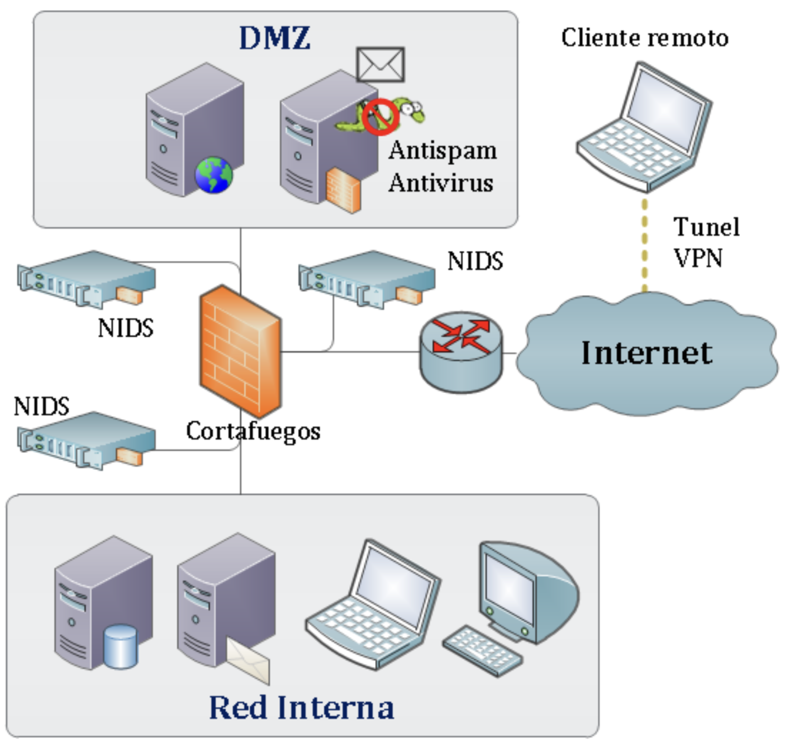

Seguridad en una red: Redes Perimetrales

¿Qué es seguridad de redes?
La seguridad de redes es el conjunto de medidas, políticas, herramientas y prácticas que se implementan para proteger una red de computadoras, dispositivos y servicios conectados contra accesos no autorizados, ciberataques, interrupciones, robos de datos y otros tipos de amenazas. La seguridad de red tiene tres objetivos principales: evitar el acceso no autorizado a los recursos de red, detectar y detener los ataques cibernéticos y las violaciones de seguridad en curso, además de garantizar que los usuarios autorizados tengan acceso seguro a los recursos de red que necesitan, cuando los necesiten.
¿Qué es la seguridad perimetral?
La seguridad perimetral es una estrategia de protección que se enfoca en resguardar los puntos de acceso externos a una red informática, creando una "frontera" de defensa entre la red interna de una organización y las amenazas provenientes del exterior sin dejar de permitir que lo que se encuentre dentro de la “frontera” tenga acceso a lo que hay en el exterior. Su propósito es evitar que los atacantes puedan ingresar a la infraestructura tecnológica desde redes no confiables, como Internet, y garantizar que solo los usuarios y dispositivos legítimos puedan acceder a los recursos y servicios internos de la red.
Este enfoque de seguridad se basa en la premisa de que las amenazas más graves suelen originarse fuera de la organización, por lo que es necesario establecer barreras robustas para bloquear accesos no autorizados. Sin embargo, aunque la seguridad perimetral es fundamental, también se reconoce que no es suficiente por sí sola, ya que las amenazas pueden surgir desde dentro de la red, por lo que suele complementarse con otras capas de seguridad.
La seguridad perimetral es crucial en la protección contra diversos tipos de amenazas externas, como los ataques cibernéticos, el robo de datos, los virus informáticos y los intentos de intrusión. Su implementación contribuye a mantener la integridad, disponibilidad y confidencialidad de los datos y sistemas, asegurando que la red no sea vulnerable a accesos no deseados.
Además de bloquear las amenazas, la seguridad perimetral también ayuda a monitorear el tráfico entrante y saliente para identificar comportamientos anómalos o ataques en curso. Este tipo de defensa, por tanto, juega un papel fundamental en la estrategia general de ciberseguridad de una organización, permitiendo detectar y neutralizar amenazas en las primeras etapas, antes de que puedan penetrar en los sistemas internos y causar daños significativos.
